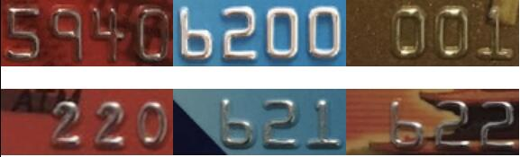

联系我们：010-88559646
第八届大赛--A组赛题
决赛优化建议（7月2日公布）：
1、项目文档（环境搭建、实现思路、算法介绍、训练过程、模型测试指标）
2、项目介绍视频（音频解说、条理清晰）
3、项目源码规范（结构清晰、命名规范、代码可读性）
4、用户图形界面（用户交互、UI设计）
5、项目源码精度（50张测试图片）
加分项：是否能识别空格
初赛作品提交要求下载（6月2日更新）
赛题名称:基于深度学习的银行卡号识别系统 组类： A 本科及以上 | |
赛题简介：介绍整个赛题的思路和整体要求 | 人类对外界信息的认识及感知，最基本的就来自于视觉，因此对视觉信息的搜集与处理，一直是人类认识世界、认识规律的重要手段。人工智能技术，通过对视觉信息的采集，对图形图像信息做科学的筛选、比对并分析，然后经过算法（深度学习）、理解和思考之后，将真实的现实内容呈现在计算机中。 随着人工智能、深度学习技术的发展，人工智能技术在视觉领域方面的应用日益突出，得到了广泛的关注和研究。本题要求同学们使用基于深度学习的视觉识别技术，拓展现有的光学识别技术（OCR）来完成一个识别银行卡号的系统，此系统包括数据集处理、银行卡号定位检测、银行卡号识别三部分。 本赛题要求使用深度学习技术体系完成，本题的目的不仅在于比试，更重视参赛同学的个人提升。
|
赛题业务场景：描述赛题相关的真实企业业务背景。从真实场景中，适当简化或者提炼出适合比赛的赛题场景 | 由于移动互联网的迅速发展，移动支付成为最主流的支付方式之一，同时在生活中，很多场景会涉及到银行卡的绑定与识别。例如： 场景一：手机支付绑定银行卡 微信支付或支付宝支付，均需提前绑定银行卡，通过扫一扫功能，扫描银行卡，自动识别卡号，进行后续的验证操作。 场景二：银行转账业务 银行进行业务前，都需要提供银行卡，扫描银行卡，进行卡号识别操作。 银行卡的智能识别需求非常广泛，它不仅可以提高工作效率、减少人工成本，同时也可以提升用户体验。 现有的各大科技公司都提供了对应的接口来实现字符识别功能，本题结合企业应用，同时考虑到同学们的资源限制，要求只实现银行卡号定位及银行卡号识别两个核心功能。 |
功能性需求 | 1.数据集处理 根据本赛题提供的数据集（共1084张卡号截图及标签）实现数据增强模块，将数据集中的每一张图片使用数据增强方式拓展为80张图片，为之后的图像识别训练提供充足的数据样本，并且该模块程序能够继续处理新加入的数据样本。
2、程序定位银行卡卡号 实现银行卡号文本的检测定位，此模块能够将拍摄的银行卡卡号部分检测出来，并截取相应部分供后续的识别模型使用（银行卡尽量充满图片，横向放置），能够读取放入到文件夹的银行卡图片。
3.程序实现银行卡号字符识别 此模块要求使用数据增强后的数据集训练字符识别模型，最终模型能够识别出赛题提供的测试银行卡卡号以及自拍的银行卡卡号。 4.采用GUI（图形用户界面） 提供良好的用户交互式界面实现。
|
非功能性需求 | 1.程序源码要求结构清晰，模块区分较为明确，提供便于读者阅读的源码指南，及项目使用文档。 2.使用人工智能领域深度学习技术进行实现，提供文本检测模型、文本识别模型。 3.使用GPU(图形处理器)加速计算。 4.提供模型训练过程截图，模型测试指标信息。
|
其他限制条件：开发环境、实验平台、开发语言、数据库、编译器等限制条件（请尽量明确） | 1.操作系统可选Windows、Linux。 2.开发语言不限（推荐使用Python3）。 3.推荐使用TensorFlow或Keras实现模型训练，但不限其它机器学习工具。 4.请标注系统中哪些部分使用了开源代码、模型及出处。 |
测试数据或平台：提供给参赛者的测试环境和测试数据。（可提供电子档） | 提供源数据集1000张左右，原始数据集为人工处理银行卡号截图，样例如下（文件名为人工手动标注号码）： 
提供测试银行卡，样例如下： |
开发所需设备及设备指标需求说明 | 1.推荐数据处理部分使用主流配置（i5及以上）电脑即可。 2.图片拍摄可使用移动设备。
|
其他要求 | 1.不能使用市场上各公司在线api接口进行功能实现。 2.鼓励使用开源工具、算法。 3.模型在数据集中的准确率要求达到90%，准确率较高的需要模型同样有泛化能力，能够识别自拍的银行卡卡号。 4.评分标准： （1）数据集处理模块15分； （2）程序定位银行卡卡号模块15分； （3）程序实现银行卡号字符识别15分； （4）采用GUI（图形用户界面）15分； （5）非功能性每一条建议5分，共20分； （6）综合20分，系统最终达到的准确率、程序运行速度、界面友好度、代码规范性等。 5.提供完整项目的源代码。 6.不得作弊抄袭。 7.参赛者需制作项目展示的媒体文件，内容包括需求文档、设计文档、使用说明书等软件开发文档。 |
出题企业：北京课工场教育科技有限公司
答疑方式：刘老师 电话：15101673930 邮箱：pai.pin@kgc.cn
官方答疑QQ群：529832375
工业和信息化部
教育部
江苏省人民政府
中国电子信息产业发展研究院
江苏省工业和信息化厅
江苏省教育厅
教育部高等学校计算机类专业教学指导委员会
信息技术新工科产学研联盟
中国信息化周报
中国（南京）软件谷
江苏软件产业人才发展基金会
南京航空航天大学
客服电话：010-88559646
邮编：100048
联系地址：北京市海淀区紫竹院路66号赛迪大厦18层